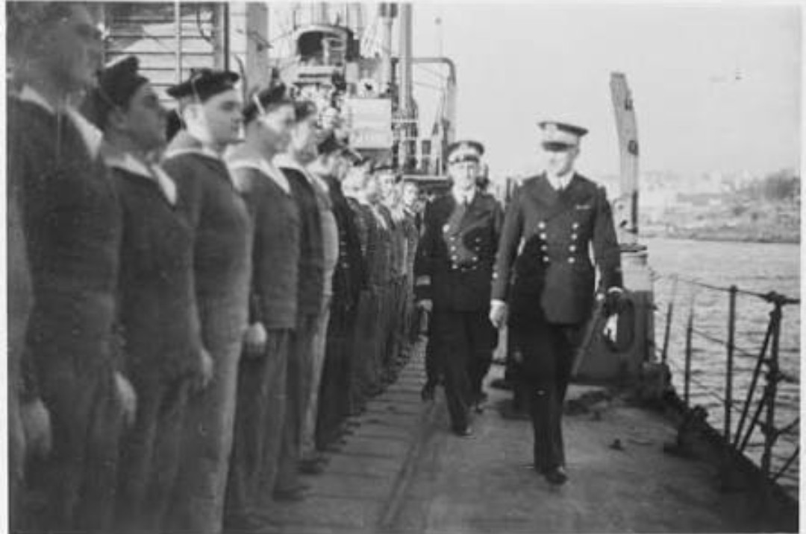
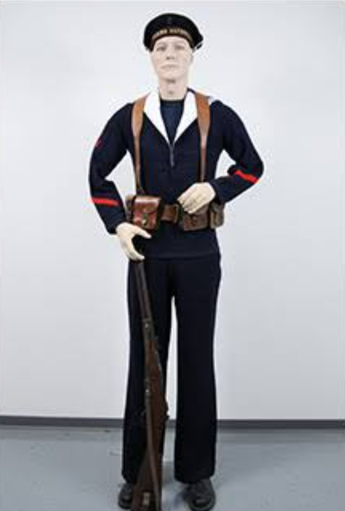

Les Troupes de Marine sont des unités d’infanterie spécialisées dans les opérations outre‑mer, amphibies et coloniales. En 1939–1940, elles servent en Afrique, au Levant, en Indochine et dans le Pacifique, tout en conservant une identité visuelle propre héritée de la Marine.
Leur uniforme reprend la base de l’infanterie française, mais avec des insignes distinctifs : l’ancre de marine.
L’armement est identique à celui de l’infanterie française, avec une forte présence du MAS‑36 et du FM 24/29, armes robustes adaptées aux théâtres coloniaux.
En Afrique, au Levant et en Indochine, les Troupes de Marine adoptent des tenues tropicales plus légères :
Ces tenues sont adaptées aux climats chauds et humides, tout en conservant l’identité visuelle de la Marine.